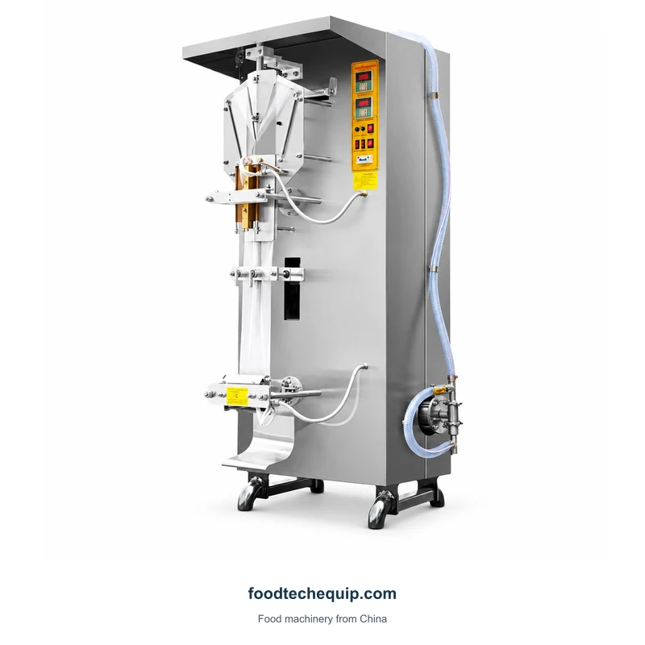

Упаковка в саше
Машина для фасовки гранул в небольшие пакеты
Вертикальная машина для фасовки гранул в саше с бункером и подачей плёнки. Указанная скорость — 10–23 упаковки/мин.
Посмотреть оборудованиеНачните с материала и готового саше. Укажите размер дозы, длину и ширину пакета, структуру плёнки и расположение шва. Для фигурного пакета может понадобиться чертёж с границей шва и линией реза.
Вертикальная машина для фасовки гранул в саше с бункером и подачей плёнки. Указанная скорость — 10–23 упаковки/мин.
Посмотреть оборудование
Машина с подачей плёнки для фасовки жидкостей или соусов в фигурные саше. Для комплектации 200 указана скорость 35–100 пакетов/мин.
Посмотреть оборудование
Оборудование для упаковки гранул с верхним многосекционным узлом и встроенной системой обработки пленки.
Посмотреть оборудование
Машина для фасовки жидкостей в небольшие пакеты с коническим загрузочным бункером и закрытой нижней упаковочной зоной.
Посмотреть оборудование
Вертикальное оборудование для упаковки гранул с подачей в бункеры, рамкой для обработки пленки и закрытыми рабочими секциями.
Посмотреть оборудование
Вертикальное оборудование для упаковки соуса с навесной обработки пленки и формовки трубки.
Посмотреть оборудование
Вертикальное оборудование для пакетов соуса с коническим бункером, рулоном пленки и шкафом управления.
Посмотреть оборудование
Вертикальная машина для фасовки жидкостей в небольшие пакеты, с формующим узлом, патрубками подачи продукта и органами управления.
Посмотреть оборудование
Вертикальная машина для фасовки порошка в небольшие пакеты, с узлами подачи плёнки и формования пакета и панелью управления.
Посмотреть оборудование
Вертикальная машина для фасовки жидкостей в небольшие пакеты из комбинированной ПЭТ-плёнки.
Посмотреть оборудование
Вертикальный соус пакет упаковочного оборудования с верхним кормовым бункером и пленки-обрабатывающей сборки.
Посмотреть оборудование
Машина для фасовки в небольшие пакеты с объёмным стаканчиковым дозатором в вариантах с большим, малым или качающимся мерным стаканом.
Посмотреть оборудование
Оборудование для упаковки в пакетики для соуса, сочетающее загрузку через бункер, обработку пленки и контроль.
Посмотреть оборудование
Машина для упаковки гранул с объёмным стаканчиковым дозатором, верхней подачей продукта и вертикальной подачей плёнки.
Посмотреть оборудование
Вертикальная машина для фасовки гранул в небольшие пакеты с верхней подачей продукта, узлом подачи плёнки и передней панелью управления.
Посмотреть оборудование
Машина для фасовки порошка в небольшие пакеты с бункером, вертикальным узлом подачи плёнки и органами управления.
Посмотреть оборудование
Машина для фасовки в небольшие пакеты с объёмным стаканчиковым дозатором, загрузочным бункером, держателем рулона плёнки и вертикальной упаковочной зоной.
Посмотреть оборудованиеПопробуйте другое ключевое слово или очистите фильтры.
Порошки, гранулы, жидкости и соусы требуют различных способов подачи. Поделитесь образцом материала, целевой порцией и макетом запечатывания, чтобы определить готовый пакет.
Сравните стоимость упаковки и размеры пленки для выбранной конфигурации. На чертеже различайте ширину рулона, ширину готового пакета и длину пакета.
| Область выбора | Что сравнивать | Что предоставить |
|---|---|---|
| Подача материала | Порошок, гранулы или жидкое состояние | Образец материала и целевая часть |
| Формирование пакета | Размеры рулона по сравнению с размерами готового пакетика | Спецификация пленки и чертеж готовой упаковки |
| Выписка | Как собирается каждая заполненная упаковка | Обработка нисходящего потока и доступное пространство |
Задача пакетика включает в себя получение упаковки, а также приготовление порции. Если вам нужна только отмеренная доза для существующего этапа упаковки, сравните дозировку отдельно. Опишите готовую упаковку и какие операции должно включать в себя предложение.